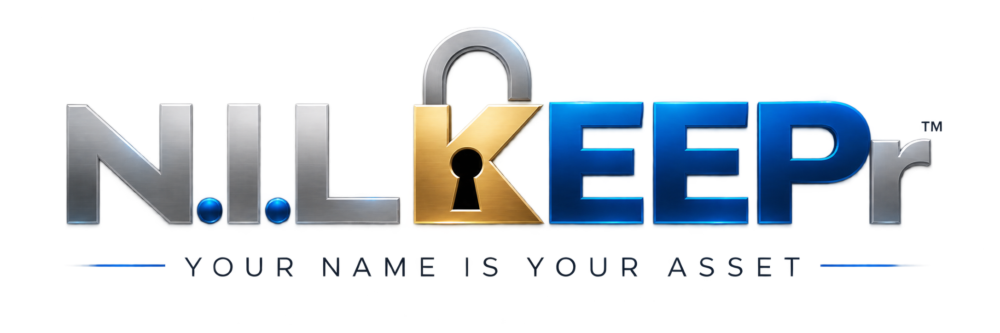

01 / The athlete
Their opportunity.
Their disclosure.
Student-athletes self-submit their NIL activity and reported academic eligibility information. The student remains the source of truth.

NILKEEPR / School compliance
Bring structure to NIL disclosures.
Give schools clarity. Keep athletes first.
01 / A clearer field of view
NIL activity is growing. Schools need visibility and documentation—without becoming part of the deal.
01 / The athlete
Student-athletes self-submit their NIL activity and reported academic eligibility information. The student remains the source of truth.
02 / The parent
For minors, parent or guardian consent is recorded and timestamped. Consent is revocable, and parents can review what schools can access.
03 / The school
School administrators see compliance-relevant information in a read-only capacity. They do not create, edit, or control student records.
04 / The institution
Disclosure timestamps, consent records, incident notes, and reports support the institution’s oversight and documentation.
02 / Built for the work behind the game
The school platform brings disclosure, consent, and documentation into a defined oversight workflow.
A connected capability
Bring self-reported NIL activity into one centralized view.
See the complete school overviewThe platform, explained
NILKEEPR’s own overview of the school-compliance workflow.
03 / Visibility has a boundary
Schools observe. They do not own the data.
The view is limited to information relevant to oversight.
Read-only information, provided by the athlete and supported by consent.
Not a gradebook. Not a Student Information System.
Not an eligibility decision maker.
A clear separation
The school-compliance service does not negotiate deals, approve or deny opportunities, value athletes, collect NIL commissions, or influence recruiting decisions.
04 / Your institution, your scale
Institutional licensing and implementation built around your athletic program’s needs.